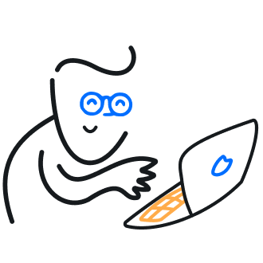

<ion-content scrollY="false" >
  <div class="containerHeader">
    <h1>Como funciona?</h1>
  </div>

  <div class="bolinhas">
    <div class="div1"></div>
    <div class="div3"></div>
  </div>

  <div class="containerTwo">
    
    <p>As comunidades são espaços feitos para o compartilhamento de uma unica lista!</p>
    <div class="container">
        <app-button-medium class="button" [routerLink]="['/load-screen-community-two']">Continuar</app-button-medium>
    </div>
  </div>
</ion-content>
     